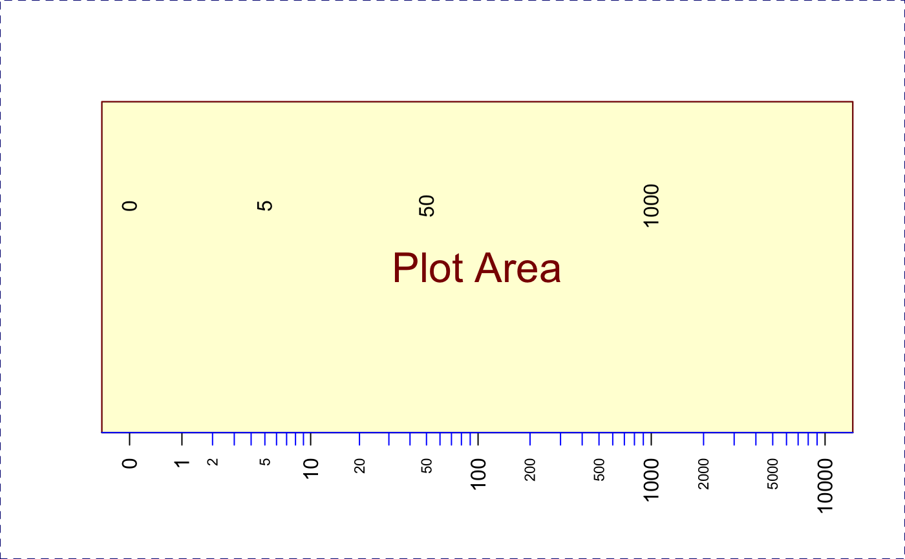
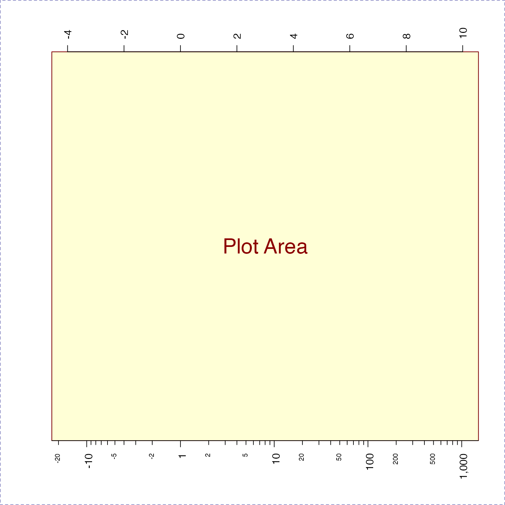
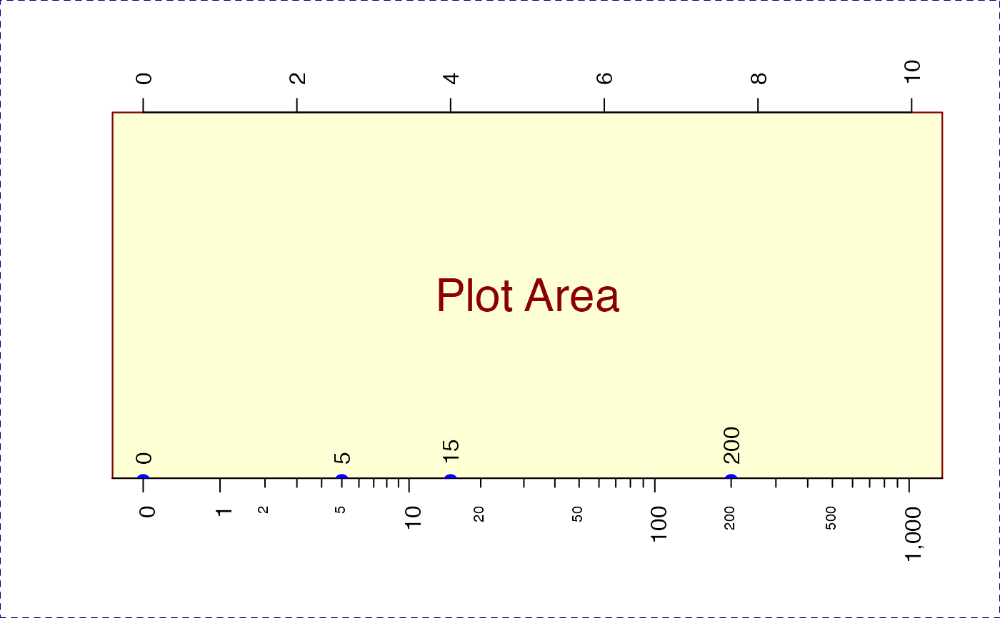

Calculate major and minor tick marks for log-scale axis
minorLogTicks( side = NULL, lims = NULL, logBase = 2, displayBase = 10, logStep = 1, minorWhich = c(2, 5), asValues = TRUE, offset = 0, symmetricZero = (offset > 0), col = "black", col.ticks = col, combine = FALSE, logAxisType = c("normal", "flipped", "pvalue"), verbose = FALSE, ... )
Arguments
| side | integer value indicating which axis to produce tick marks, 1=bottom, 2=left, 3=top, 4=right. |
|---|---|
| lims | numeric vector length=2, indicating specific numeric range to use for tick marks. |
| logBase | numeric value indicating the logarithmic base, assumed
to be applied to the numeric |
| displayBase | numeric value indicating the base used to position
axis labels, typically |
| logStep | integer value indicating the number of log steps
between major axis label positions. Typically |
| minorWhich | integer vector of values to label, where those
integer values are between 1 and |
| asValues | logical indicating whether to create exponentiated
numeric labels. When |
| offset | numeric value added during log transformation, typically
of the form |
| symmetricZero | logical indicating whether numeric values
are symmetric around zero. For example, log fold changes should
use |
| verbose | logical indicating whether to print verbose output. |
| ... | additional parameters are ignored. |
Value
List of axis tick positions, and corresponding labels, for major and minor ticks. Major ticks are defined as one tick per log10 unit, exponentiated. For example, 1, 10, 100, 1000.
Details
This function calculates log units for the axis of an
existing base R plot. It
calculates appropriate tick and label positions for major
steps, which are typically in log steps; and minor steps, whic
are typically a subset of steps at one lower log order.
For example, log 10 steps would be: c(1, 10, 100, 1000),
and minor steps would be c(2, 5, 20, 50, 200, 500, 2000, 5000).
This function was motivated in order to label log-transformed
data properly in some special cases, like using log2(1+x)
where the resulting values are shifted "off by one" using
standard log-scaled axis tick marks and labels.
Also, when using log fold change values, this function
creates axis labels which indicate negative fold change
values, for example -2 in log2 fold change units would
be labeled with fold change -4, and not 0.0625 which
represents a fractional value.
Use the argument symmetricZero=TRUE when using directional
log fold change values.
See also
Other jam practical functions:
applyCLrange(),
breakDensity(),
checkLightMode(),
colNum2excelName(),
exp2signed(),
fileInfo(),
fixYellowHue(),
fixYellow(),
getAxisLabel(),
handleArgsText(),
isFALSEV(),
isTRUEV(),
jamba,
jargs(),
kable_coloring(),
log2signed(),
make_styles(),
mergeAllXY(),
newestFile(),
printDebugI(),
printDebug(),
renameColumn(),
rmInfinite(),
rmNA(),
rmNULL(),
sclass(),
sdima(),
sdim(),
setCLranges(),
setPrompt(),
ssdima(),
ssdim()
Examples
## This example shows how to draw axis labels manually, ## but the function minorLogTicksAxis() is easier to use. xlim <- c(0,4); nullPlot(xlim=xlim, doMargins=FALSE);mlt <- minorLogTicks(1, logBase=10, offset=1, minTick=0);#> Warning: coercing argument of type 'double' to logicalmin <- subset(mlt$allLabelsDF, type %in% "minor"); axis(1, las=2, cex.axis=0.7, at=min$tick, label=min$text, col="blue");#> Warning: coercing argument of type 'double' to logical#> Warning: coercing argument of type 'double' to logicalx2 <- rnorm(1000) * 40; d2 <- density(log2(1+abs(x2)) * ifelse(x2<0, -1, 1)); lines(x=d2$x, y=normScale(d2$y)+1, col="green4");#> Warning: coercing argument of type 'double' to logical